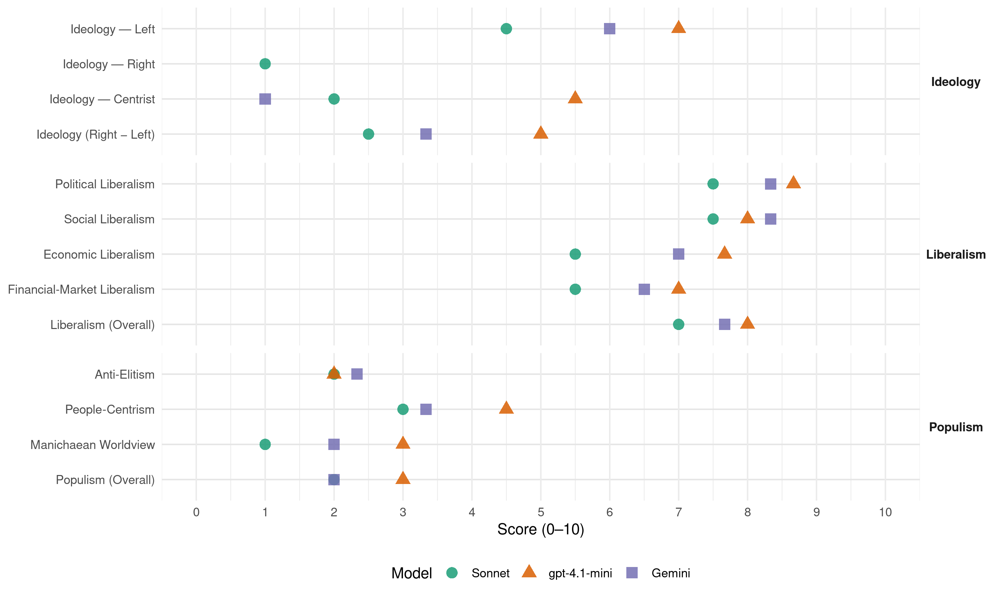

PSOE (Spain, 1986)
manifesto_id 33320_198606
Get full text: This site shows derived annotations and short verbatim quotes only. The full manifesto text is © Manifesto Project / WZB — obtain it via manifesto-project.wzb.eu using the manifesto_id above.
Headline scores
| Dimension | Sonnet | gpt-4.1-mini | Gemini |
|---|---|---|---|
| Populism (Overall) | 2.0 | 3.0 | 2.0 |
| Anti-Elitism | 2.0 | 2.0 | 2.3 |
| People-Centrism | 3.0 | 4.5 | 3.3 |
| Manichaean Worldview | 1.0 | 3.0 | 2.0 |
| Ideology (Right − Left) | 2.5 | 5.0 | 3.3 |
| Liberalism (Overall) | 7.0 | 8.0 | 7.7 |
| Political Liberalism | 7.5 | 8.7 | 8.3 |
| Social Liberalism | 7.5 | 8.0 | 8.3 |
| Economic Liberalism | 5.5 | 7.7 | 7.0 |
| Financial-Market Liberalism | 5.5 | 7.0 | 6.5 |
Evidence per dimension
Economic Liberalism
Gemini · score 6.0 · mixed · chunk 1
“basarse tanto en la iniciativa privada como en”
avanzado en España Cebe basarse tanto en la iniciativa privada como en e apoyo y estimulo del Estado. La sociedad española
Gemini · score 6.0 · mixed · chunk 2
“disminuirá paulatinamente, de forma que aquéllas prácticamente se configuren como tarifas libres”
intervención administrativa en el transporte de mercancías disminuirá paulatinamente, de forma que aquéllas prácticamente se configuren como tarifas libres. En el transporte de viajeros
Gemini · score 7.0 · verified · chunk 3
“remover las trabas burocráticas que impiden la creación y funcionamiento de las empresas”
se adoptarán las medidas necesarias para remover las trabas burocráticas que impiden la creación y funcionamiento de las empresas. Para ello se procederá a elaborar un programa
gpt-4.1-mini · score 8.0 · verified · chunk 1
“la política económica que cuide los equilibrios básicos e impulse la modernización de los sectores productivos”
Para conseguir estos objetivos mantendremos una politice económica que cuide los equilibrios básicos e impulse la modernización de los sectores productivos, y que a la vez contribuya a redistribuir la renta y se apoye en el concurso y el acuerdo entre empresarios y trabajadores.
gpt-4.1-mini · score 7.0 · verified · chunk 2
“la competitividad de nuestras empresas en el exterior”
…una disminución de los costes sociales, de forma que éstos no penalicen la utilización del factor trabajo o la competitividad de nuestras empresas en el exterior.
gpt-4.1-mini · score 8.0 · verified · chunk 3
“remover las trabas burocráticas que impiden la creación y funcionamiento de las empresas”
7.3.2.1. Reformas administrativas para agilizar el desarrollo económico. La actual distribución de competencias entre las distintas Administraciones Públicas obliga a realizar múltiples gestiones que resultan en exceso gravosas y que pueden suponer un freno a la iniciativa personal y empresarial. Continuando con la política ya iniciada por el Gobierno, se adoptarán las medidas necesarias para remover las trabas burocráticas que impiden la creación y funcionamiento de las empresas. Para ello se procederá a elaborar un programa cuya línea fundamental será la prestación de servicios de información y asistencia a los empresarios, especialmente aquellos encaminados a incorporar a la pequeña y mediana empresa y a las cooperativas y sociedades laborales a los nuevos sistemas de producción y gestión empresarial.
Sonnet · score 5.0 · verified · chunk 2
“competitividad de nuestras empresas en el exterior”
de forma que éstos no penalicen la utilización del factor trabajo o la competitividad de nuestras empresas en el exterior
Sonnet · score 6.0 · verified · chunk 3
“remover las trabas burocráticas que impiden”
se adoptarán las medidas necesarias para remover las trabas burocráticas que impiden la creación y funcionamiento de las empresas
Financial-Market Liberalism
Gemini · score 6.0 · verified · chunk 1
“saneamiento de las Cajas Rurales”
Crédito Agrícola. En este sentido, completar el saneamiento de las Cajas Rurales y el proceso de democratización de sus órganos rectores
Gemini · score 7.0 · verified · chunk 2
“acrecentamiento de la competencia entre las entidades financieras”
Deberá mantenerse el proceso de acrecentamiento de la competencia entre las entidades financieras, a la vez que se adoptan
gpt-4.1-mini · score 7.0 · verified · chunk 1
“la reducción del déficit público creará las condiciones óptimas para conseguir un mayor crecimiento económico”
La reducción de la inflación y del déficit público creará las condiciones óptimas para conseguir un mayor crecimiento, económico y una mayor satisfacción de las necesidades sociales.
gpt-4.1-mini · score 7.0 · verified · chunk 2
“mercado de valores. Este será modernizado bajo los principios de mercado único”
Todos los mercados directos serán estimulados y, en especial, el mercado de valores. Este será modernizado bajo los principios de mercado único y continuo, transparencia y competencia entro todas las instituciones profesionales que participan en él.
Sonnet · score 6.0 · verified · chunk 2
“mercado único y continuo, transparencia y competencia”
Este será modernizado bajo los principios de mercado único y continuo, transparencia y competencia entro todas las instituciones profesionales que participan en él
Sonnet · score 5.0 · verified · chunk 3
“coordinación económica y financiera”
el Consejo de Política Fiscal y Financiera potenciará las funciones ya asignadas sobre coordinación de las políticas económicas y financieras de los distintos niveles de gobierno
Political Liberalism
Gemini · score 8.0 · verified · chunk 1
“consolidación y desarrollo de la democracia”
oferta política se centraron en la consolidación y desarrollo de la democracia y en la lucha contra la crisis económica. Ambos eran
Gemini · score 8.0 · verified · chunk 2
“sistema de derechos y libertades semejante al de cualquier país”
cuenta con un sistema de derechos y libertades semejante al de cualquier país de Europa Occidental, protegido por un sistema
Gemini · score 9.0 · verified · chunk 3
“desarrollo de la Constitución, de reforma de la Administración de Justicia”
SEGURIDAD PARA PROTEGER LA LIBERTAD. Cuatro años de gestión socialista han supuesto una labor de desarrollo de la Constitución, de reforma de la Administración de Justicia, de modernización del ordenamiento jurídico
gpt-4.1-mini · score 9.0 · verified · chunk 1
“la consolidación y desarrollo de la democracia”
1 LA CONSOLIDACION y DESARROLLO DE LA DEMOCRACIA. La consolidación de la democracia y su desarrollo constituyó un gran eje de la oferta socialista en 1982. Y se presenta ahora, en 1986, como un activo del que todos podemos sentirnos orgullosos, porque por definición, la democracia es una tarea colectiva y por mucha voluntad que tenga un gobierno o una fuerza política, sin e esfuerzo de la mayoría no hay democracia posible.
gpt-4.1-mini · score 8.0 · verified · chunk 2
“derechos y libertades de la persona y de los grupos”
La convivencia democrática implica que los derechos y libertades de la persona y de los grupos en que se integra tienen que ejercerse de forma real y efectiva.
gpt-4.1-mini · score 9.0 · verified · chunk 3
“Cuatro años de gestión socialista han supuesto una labor de desarrollo de la Constitución, de reforma de la Administración de Justicia, de modernización del ordenamiento jurídico y de garantía de la seguridad ciudadana”
VI. SEGURIDAD PARA PROTEGER LA LIBERTAD. Cuatro años de gestión socialista han supuesto una labor de desarrollo de la Constitución, de reforma de la Administración de Justicia, de modernización del ordenamiento jurídico y de garantía de la seguridad ciudadana que puede ser calificada de histórica. Hoy el ciudadano español cuenta con un sistema de derechos y libertades semejante al de cualquier país de Europa Occidental, protegido por un sistema acabado y perfeccionado La convivencia democrática implica que los derechos y libertades de la persona y de los grupos en que se integra tienen que ejercerse de forma real y efectiva.
Sonnet · score 7.0 · verified · chunk 2
“sistema de derechos y libertades semejante”
Hoy el ciudadano español cuenta con un sistema de derechos y libertades semejante al de cualquier país de Europa Occidental, protegido por un sistema acabado y perfeccionado
Sonnet · score 8.0 · verified · chunk 3
“sistema de derechos y libertades semejante al de”
Hoy el ciudadano español cuenta con un sistema de derechos y libertades semejante al de cualquier país de Europa Occidental, protegido por un sistema acabado y perfeccionado
Liberalism (Overall)
Gemini · score 7.0 · verified · chunk 1
“consolidación y desarrollo de la democracia”
oferta política se centraron en la consolidación y desarrollo de la democracia y en la lucha contra la crisis económica. Ambos eran
Gemini · score 8.0 · verified · chunk 2
“sistema de derechos y libertades semejante al de cualquier país”
cuenta con un sistema de derechos y libertades semejante al de cualquier país de Europa Occidental, protegido por un sistema
Gemini · score 8.0 · verified · chunk 3
“desarrollo de la Constitución, de reforma de la Administración de Justicia”
SEGURIDAD PARA PROTEGER LA LIBERTAD. Cuatro años de gestión socialista han supuesto una labor de desarrollo de la Constitución, de reforma de la Administración de Justicia, de modernización del ordenamiento jurídico
gpt-4.1-mini · score 8.0 · verified · chunk 1
“la consolidación y desarrollo de la democracia”
1 LA CONSOLIDACION y DESARROLLO DE LA DEMOCRACIA. La consolidación de la democracia y su desarrollo constituyó un gran eje de la oferta socialista en 1982. Y se presenta ahora, en 1986, como un activo del que todos podemos sentirnos orgullosos, porque por definición, la democracia es una tarea colectiva y por mucha voluntad que tenga un gobierno o una fuerza política, sin e esfuerzo de la mayoría no hay democracia posible.
gpt-4.1-mini · score 8.0 · verified · chunk 2
“derechos y libertades de la persona y de los grupos”
La convivencia democrática implica que los derechos y libertades de la persona y de los grupos en que se integra tienen que ejercerse de forma real y efectiva.
gpt-4.1-mini · score 8.0 · verified · chunk 3
“Cuatro años de gestión socialista han supuesto una labor de desarrollo de la Constitución, de reforma de la Administración de Justicia, de modernización del ordenamiento jurídico y de garantía de la seguridad ciudadana”
VI. SEGURIDAD PARA PROTEGER LA LIBERTAD. Cuatro años de gestión socialista han supuesto una labor de desarrollo de la Constitución, de reforma de la Administración de Justicia, de modernización del ordenamiento jurídico y de garantía de la seguridad ciudadana que puede ser calificada de histórica. Hoy el ciudadano español cuenta con un sistema de derechos y libertades semejante al de cualquier país de Europa Occidental, protegido por un sistema acabado y perfeccionado La convivencia democrática implica que los derechos y libertades de la persona y de los grupos en que se integra tienen que ejercerse de forma real y efectiva.
Sonnet · score 7.0 · verified · chunk 2
“sistema de derechos y libertades semejante”
Hoy el ciudadano español cuenta con un sistema de derechos y libertades semejante al de cualquier país de Europa Occidental, protegido por un sistema acabado y perfeccionado
Sonnet · score 7.0 · verified · chunk 3
“una sociedad abierta en España”
nuestras propuestas para la nueva legislatura pueden resumirse en un avance sustancial hacia el objetivo de una sociedad abierta en España
Anti-Elitism
Gemini · score 3.0 · verified · chunk 1
“derecha gobernante hasta entonces se vela imposibilitada”
grave situación social, política y económica en que se encontraba España. La derecha gobernante hasta entonces se vela imposibilitada para abordar los cambios necesarios. Por una parte. porque
Gemini · score 3.0 · verified · chunk 2
“presión de los corporativismos contra e conjunto”
como el instrumento más idóneo frente a la presión de los corporativismos contra e conjunto de la sociedad y contra el Estado.
Gemini · score 1.0 · verified · chunk 3
“evitando corruptelas y prácticas abesivas”
incrementar las dotaciones destinadas a este objeto. Este conjunto de medidas se complementará con aquellas que traten de lograr una mayor transparencia y contacto directo con los ciudadanos, y que eviten corruptelas y prácticas abesivas. 2. Una justicia fiable y segura.
gpt-4.1-mini · score 2.0 · verified · chunk 1
“la derecha gobernante hasta entonces se vela imposibilitada”
En octubre de 1982 el PSOE ofreció al pueblo español un programa en el que se planteaba como tarea prioritaria afrontar la grave situación social, política y económica en que se encontraba España. La derecha gobernante hasta entonces se vela imposibilitada para abordar los cambios necesarios. Por una parte. porque era la responsable de esa situación tras varios decenios de detentar el poder.
gpt-4.1-mini · score 2.0 · verified · chunk 2
“la presión de los corporativismos contra e conjunto de la sociedad”
El Gobierno acrecentará los niveles de participación, como el instrumento más idóneo frente a la presión de los corporativismos contra e conjunto de la sociedad y contra el Estado.
Sonnet · score 2.0 · verified · chunk 2
“monopolios, privilegios o visiones sementadas”
las energías de la sociedad no se estanquen en los estrechos limites de la defensa de las posiciones de monopolios, privilegios o visiones sementadas del interés colectivo
Sonnet · score 2.0 · verified · chunk 3
“el poder público siempre tendió a degenerar en un fin en sí mismo”
en la tradición política española el poder público siempre tendió a degenerar en un fin en sí mismo, en algo cuyo ejercicio venía a ser un Único título de legitimidad
Ideology — Centrist
Gemini · score 1.0 · verified · chunk 3
“gracias al empeño de la mayoría de los españoles”
resistencias endémicas del sistema anterior- es un hito trascendería: en nuestra historia constitucional. Hoy podemos decir que, gracias al empeño de la mayoría de los españoles, se ha logrado construir una España vertebrada
gpt-4.1-mini · score 6.0 · verified · chunk 1
“el pueblo español así lo interpretó y mayoritariamente dio su confianza al PSOE”
El pueblo español así lo interpretó y mayoritariamente dio su confianza al PSOE para abrir una nueva etapa que significase un cambio cualitativo Era necesario el cambio político, no sólo para afrontar problemas que hasta entonces se habían ignorado, sino porque la sociedad reclamaba también una nueva forma de gobernar.
gpt-4.1-mini · score 5.0 · verified · chunk 2
“participación social como elemento que ayudará al proceso de integración”
El segundo componente del proyecto democrático del PSOE reside en la participación social como elemento que ayudará al proceso de integración, modernización y mejora de la calidad de vida de la sociedad española.
Sonnet · score 2.0 · verified · chunk 2
“calidad de vida de los españoles”
El Gobierno socialista continuará combatiendo las causas y los efectos de la degradación ambiental como un elemento indispensable de la calidad de vida de los españoles
Sonnet · score 2.0 · verified · chunk 3
“Los socialistas pretendemos que la Administración pase”
Los socialistas pretendemos que la Administración pase a ser una fuente de soluciones para el ciudadano
Ideology — Left
Gemini · score 6.0 · verified · chunk 1
“distribución de la renta y de la riqueza”
progresar en la redistribución de la renta, a través del aumento de las prestaciones sociales, acentuando la solidaridad en la sociedad española.
Gemini · score 6.0 · verified · chunk 2
“proyecto superador de las desigualdades que genera el sistema”
renovamos nuestro compromiso por un proyecto superador de las desigualdades que genera el sistema. En esta nueva etapa
gpt-4.1-mini · score 7.0 · verified · chunk 1
“el obligado proceso de ajuste debía hacerse no sólo por razones puramente económicas o tecnológicas sino por exigencias de solidaridad y con la perspectiva de una evolución hacía una mayor igualdad social”
Junto a ello, nos guiamos por la idea de que el obligado proceso de ajuste debía hacerse no sólo por razones puramente económicas o tecnológicas sino por exigencias de solidaridad y con la perspectiva de una evolución hacía una mayor igualdad social. En estos cuatro años la lucha contra la crisis ha debido centrarse en la supresión de profundos y persistentes desequilibrios económicos: la inflación, el déficit público y el desequilibrio exterior.
gpt-4.1-mini · score 7.0 · verified · chunk 2
“el papel redistribuidor del sector publico”
…orientar las grandes líneas de la política presupuestaria de modo que se acentúe el papel redistribuidor del sector publico.
Sonnet · score 5.0 · verified · chunk 2
“redistribución de la renta y calidad de vida”
IV. UNA SOCIEDAD MÁS JUSTA; REDISTRIBUCION DE LA RENTA Y CALIDAD DE VIDA. El crecimiento económico es un bien social si va acompañado de la creación estable de empleo
Sonnet · score 4.0 · verified · chunk 3
“igualdad material ante la ley, evitando”
Un principio que regirá estas reformas será el de la igualdad material ante la ley, evitando que puedan prevalecer en la práctica distintos tratamientos en función del origen social
Ideology (Right − Left)
Gemini · score 5.0 · verified · chunk 1
“distribución de la renta y de la riqueza”
progresar en la redistribución de la renta, a través del aumento de las prestaciones sociales, acentuando la solidaridad en la sociedad española.
Gemini · score 4.0 · verified · chunk 2
“proyecto superador de las desigualdades que genera el sistema”
renovamos nuestro compromiso por un proyecto superador de las desigualdades que genera el sistema. En esta nueva etapa
Gemini · score 1.0 · verified · chunk 3
“gracias al empeño de la mayoría de los españoles”
resistencias endémicas del sistema anterior- es un hito trascendería: en nuestra historia constitucional. Hoy podemos decir que, gracias al empeño de la mayoría de los españoles, se ha logrado construir una España vertebrada
gpt-4.1-mini · score 5.0 · verified · chunk 1
“el pueblo español así lo interpretó y mayoritariamente dio su confianza al PSOE”
El pueblo español así lo interpretó y mayoritariamente dio su confianza al PSOE para abrir una nueva etapa que significase un cambio cualitativo Era necesario el cambio político, no sólo para afrontar problemas que hasta entonces se habían ignorado, sino porque la sociedad reclamaba también una nueva forma de gobernar.
gpt-4.1-mini · score 5.0 · verified · chunk 2
“el papel redistribuidor del sector publico”
…orientar las grandes líneas de la política presupuestaria de modo que se acentúe el papel redistribuidor del sector publico.
Sonnet · score 3.0 · verified · chunk 2
“redistribución de la renta y calidad de vida”
IV. UNA SOCIEDAD MÁS JUSTA; REDISTRIBUCION DE LA RENTA Y CALIDAD DE VIDA. El crecimiento económico es un bien social si va acompañado de la creación estable de empleo
Sonnet · score 2.0 · verified · chunk 3
“igualdad material ante la ley”
Un principio que regirá estas reformas será el de la igualdad material ante la ley, evitando distintos tratamientos en función del origen social o de la posición económica
Ideology — Right
Sonnet · score 1.0 · verified · chunk 2
“preferencia al Pabellón y protección de la mano de obra nacional”
Bajo el principio elemental de preferencia al Pabellón y protección de la mano de obra nacional, debe participarse activamente en la formulación de esta política
Sonnet · score 1.0 · verified · chunk 3
“integridad territorial, la soberanía nacional”
Garantizar la integridad territorial, la soberanía nacional y la seguridad de España, participando en el esfuerzo conjunto de la seguridad occidental
Manichaean Worldview
Gemini · score 2.0 · verified · chunk 1
“añoran situaciones de privilegio que se van agotando”
surgir diferencias entre los que añoran situaciones de privilegio que se van agotando y los que están por un verdadero cambio social. La
gpt-4.1-mini · score 3.0 · verified · chunk 1
“la derecha gobernante hasta entonces se vela imposibilitada”
En octubre de 1982 el PSOE ofreció al pueblo español un programa en el que se planteaba como tarea prioritaria afrontar la grave situación social, política y económica en que se encontraba España. La derecha gobernante hasta entonces se vela imposibilitada para abordar los cambios necesarios. Por una parte. porque era la responsable de esa situación tras varios decenios de detentar el poder. Por otra, porque estaba sumida en una profunda crisis, dividida por sus propios enfrentamientos internos y carente de la convicción necesaria para romper con las hipotecas del pasado
Sonnet · score 1.0 · verified · chunk 2
“presión de los corporativismos contra el conjunto”
el instrumento más idóneo frente a la presión de los corporativismos contra e conjunto de la sociedad y contra el Estado
Sonnet · score 1.0 · verified · chunk 3
“lucha contra la injusta situación de millones”
nuestro compromiso de luchar contra la injusta situación de millones de seres humanos que padecen hambre y contra el subdesarrollo
People-Centrism
Gemini · score 4.0 · verified · chunk 1
“ofreció al pueblo español un programa”
En octubre de 1982 el PSOE ofreció al pueblo español un programa en el que se planteaba como tarea prioritaria afrontar
Gemini · score 4.0 · verified · chunk 2
“elevar el conocimiento de este arte entre el pueblo español”
enseñanza y la difusión musical, con el fin de elevar el conocimiento de este arte entre el pueblo español. Se desarrollarán los medios
Gemini · score 2.0 · verified · chunk 3
“gracias al empeño de la mayoría de los españoles”
resistencias endémicas del sistema anterior- es un hito trascendería: en nuestra historia constitucional. Hoy podemos decir que, gracias al empeño de la mayoría de los españoles, se ha logrado construir una España vertebrada
gpt-4.1-mini · score 6.0 · verified · chunk 1
“el pueblo español así lo interpretó y mayoritariamente dio su confianza al PSOE”
El pueblo español así lo interpretó y mayoritariamente dio su confianza al PSOE para abrir una nueva etapa que significase un cambio cualitativo Era necesario el cambio político, no sólo para afrontar problemas que hasta entonces se habían ignorado, sino porque la sociedad reclamaba también una nueva forma de gobernar.
gpt-4.1-mini · score 3.0 · verified · chunk 2
“todos los ciudadanos tengan garantizados unos mínimos de prosperidad material”
…una sociedad más protegidos, en la que todos los ciudadanos tengan garantizados unos mínimos de prosperidad material y en la que se disfrute de una mejor calidad de vida.
Sonnet · score 3.0 · verified · chunk 2
“calidad de vida para todos los ciudadanos”
La competitividad do la economía española y el logro de niveles más elevados de calidad de vida para todos los ciudadanos exige un mayor compromiso
Sonnet · score 3.0 · verified · chunk 3
“Los ciudadanos tienen derecho a que esas modernas tecnologías”
Los ciudadanos tienen derecho a que esas modernas tecnologías sirvan directamente a su comodidad y a la rápida y eficaz solución de sus problemas
Populism (Overall)
Gemini · score 3.0 · verified · chunk 1
“ofreció al pueblo español un programa”
En octubre de 1982 el PSOE ofreció al pueblo español un programa en el que se planteaba como tarea prioritaria afrontar
Gemini · score 2.0 · verified · chunk 2
“presión de los corporativismos contra e conjunto”
como el instrumento más idóneo frente a la presión de los corporativismos contra e conjunto de la sociedad y contra el Estado.
Gemini · score 1.0 · verified · chunk 3
“evitando corruptelas y prácticas abesivas”
incrementar las dotaciones destinadas a este objeto. Este conjunto de medidas se complementará con aquellas que traten de lograr una mayor transparencia y contacto directo con los ciudadanos, y que eviten corruptelas y prácticas abesivas. 2. Una justicia fiable y segura.
gpt-4.1-mini · score 4.0 · verified · chunk 1
“la derecha gobernante hasta entonces se vela imposibilitada”
En octubre de 1982 el PSOE ofreció al pueblo español un programa en el que se planteaba como tarea prioritaria afrontar la grave situación social, política y económica en que se encontraba España. La derecha gobernante hasta entonces se vela imposibilitada para abordar los cambios necesarios. Por una parte. porque era la responsable de esa situación tras varios decenios de detentar el poder.
gpt-4.1-mini · score 2.0 · verified · chunk 2
“la presión de los corporativismos contra e conjunto de la sociedad”
El Gobierno acrecentará los niveles de participación, como el instrumento más idóneo frente a la presión de los corporativismos contra e conjunto de la sociedad y contra el Estado.
Sonnet · score 2.0 · verified · chunk 2
“monopolios, privilegios o visiones sementadas”
las energías de la sociedad no se estanquen en los estrechos limites de la defensa de las posiciones de monopolios, privilegios o visiones sementadas del interés colectivo
Sonnet · score 2.0 · verified · chunk 3
“el poder público siempre tendió a degenerar”
en la tradición política española el poder público siempre tendió a degenerar en un fin en sí mismo
Social Liberalism